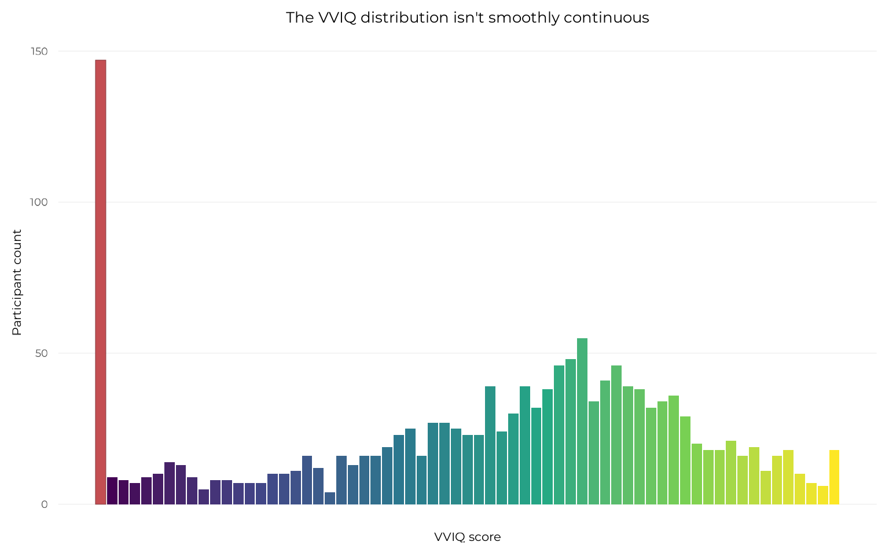
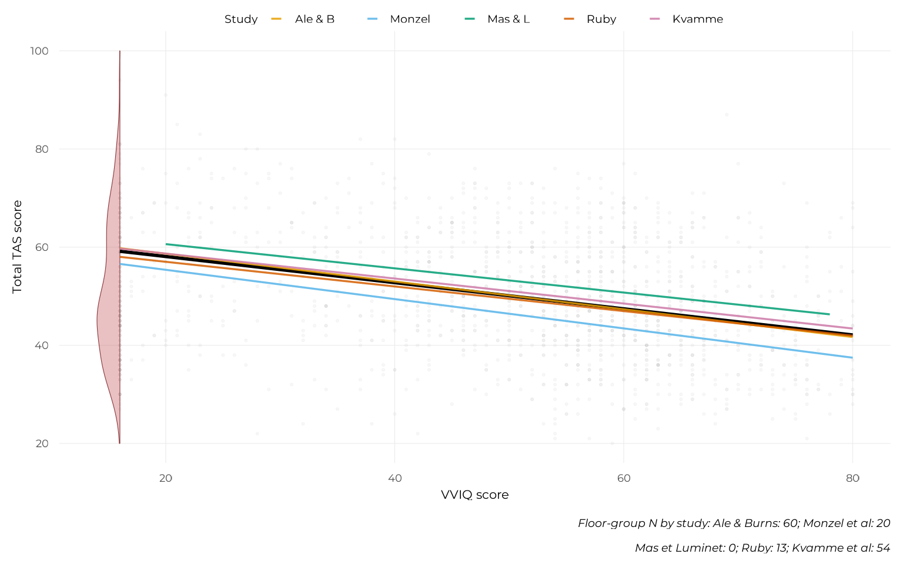
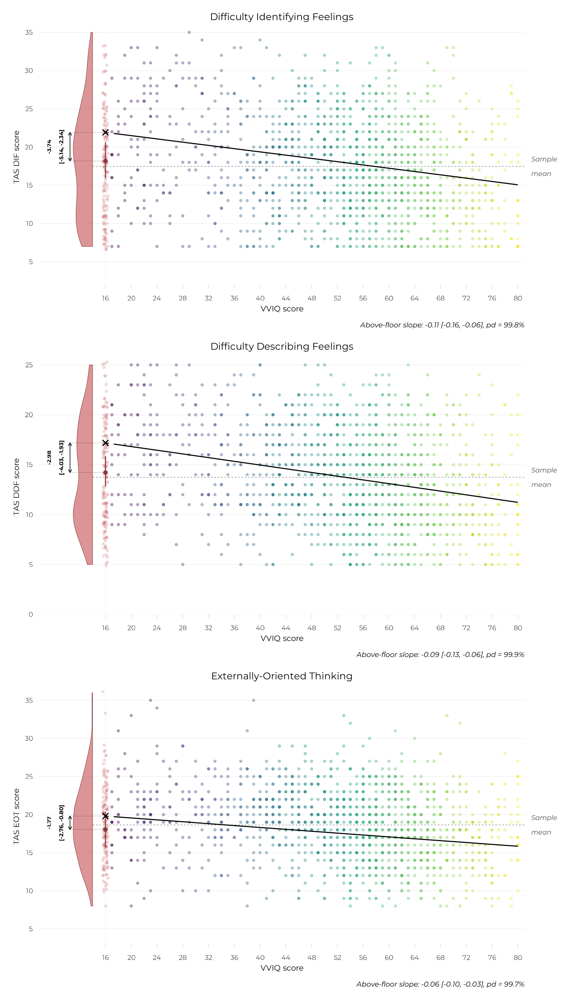

The floor-group model, in depth
Source:vignettes/articles/floor-group-model.Rmd
floor-group-model.Rmd
library(aphantasiaEmotions)
library(ggplot2)
library(patchwork)
# Models and results are loaded directly from their saved artefacts in the
# vignette, and explicitly never refitted (this is merely to protect the
# website). The "pkg" shorthand will be used throughout to point to the files of
# the aphantasiaEmotions package.
# See the Implementation Notes page for how these models were actually built.
pkg <- "aphantasiaEmotions"
refit <- "never"The previous page ended on a twist: among six candidate models, the one that best combines quality of fit and parsimony is not the most flexible one (the segmented model with an estimated knot), but the simplest one that captures the right structure: a plain linear relationship among everyone above VVIQ = 16, plus a single coefficient letting complete aphantasics have their own mean. This page is the full case for that model: what it says, how confident we can be in what it says, and whether it holds up once study-level heterogeneity and prior choice are both accounted for.
The model
# Creating a binary column for whether a participant is in the floor-VVIQ group
# (complete aphantasia) or not
model_data <- all_data
model_data$complete_aphant <- factor(
ifelse(model_data$vviq_group_4 == "aphantasia", "floor", "above_floor"),
levels = c("above_floor", "floor")
)
# Fitting the model
floor_group_additive_multilevel <- fit_brms_model(
formula = tas ~ vviq + complete_aphant + (vviq | study),
data = model_data,
prior = brms::prior(normal(0, 20), class = "b"),
file = system.file(
"models", "floor_group_additive_multilevel_tot.rds", package = pkg),
file_refit = refit
)The formula is deliberately asymmetric, and that asymmetry is the
whole point. Complete aphantasics (VVIQ = 16) have no variance in VVIQ
among themselves (every one of them has the same score) so there is no
data to estimate a VVIQ-TAS slope specific to that group. What
the data can support is a single, well-identified quantity: how far that
group’s mean TAS score sits from where the continuous relationship, fit
on everyone else, would have predicted it. complete_aphant
is that quantity. (vviq | study) lets both the slope and
the intercept vary by study, which is what makes the model’s conclusions
checkable against between-study heterogeneity rather than just the
pooled average (see below).
The floor group, visualised
Before the full figure, it’s worth seeing the piece of data that motivates this whole model on its own: the VVIQ distribution itself is not smoothly continuous. There is a sharp, isolated spike at the scale’s floor, distinct from a more continuous, if irregular, remainder above it.
plot_vviq_marginal_histogram(model_data, base_size = 16) +
ggplot2::labs(
title = "The VVIQ distribution isn't smoothly continuous",
x = "VVIQ score"
)
That spike is the reason a group-specific intercept, rather than a smooth curve, turns out to be the right tool: the data itself is telling you one part of the range behaves like a distinct category, not like the tail of a continuum.
Composed with the model’s own fitted relationship, the same histogram becomes the header panel of this project’s signature figure:
hist_panel <-
plot_vviq_marginal_histogram(model_data, base_size = 16) +
ggplot2::geom_hline(yintercept = 0, color = "black", linewidth = 0.3) +
ggplot2::scale_x_continuous(
limits = c(8, 81),
expand = ggplot2::expansion(c(0.02, 0))
)
main_panel <-
plot_floor_group(
floor_group_additive_multilevel, model_data,
base_size = 16, stat_txt_size = 4.5)
hist_panel / main_panel + patchwork::plot_layout(heights = c(1, 4))
The evidence
rope_range_contrast <- bayestestR::rope_range(floor_group_additive_multilevel)
sd_tas <- stats::sd(model_data$tas)
sd_vviq <- stats::sd(model_data$vviq)
rope_range_slope <- 0.2 * (sd_tas / sd_vviq)
floor_effect <- bayestestR::describe_posterior(
floor_group_additive_multilevel,
parameters = "complete_aphant",
rope_range = rope_range_contrast
)
vviq_slope <- bayestestR::describe_posterior(
floor_group_additive_multilevel,
parameters = "vviq",
rope_range = c(-rope_range_slope, rope_range_slope)
)The floor group’s mean sits 8.41 points below where the above-floor relationship would predict it (95% CI [-11.15, -5.66]), with a probability of direction of 100.0% and 0.0% of the posterior inside the region of practical equivalence to zero — as clear and as meaningful an effect as this project’s evidentiary standards can show.
The above-floor slope itself is -0.266 (95% CI [-0.350, -0.186]), pd = 99.9%, 0.0% in ROPE. Note that this uses a different ROPE convention than the floor-group contrast above, since a raw slope and a group contrast aren’t comparable on the same scale (see implementation notes for the full reasoning).
Multilevel robustness
The result above already comes from the multilevel model:
(vviq | study) is part of the formula, not a separate
add-on. It’s worth showing directly what that buys: does the floor
effect look like a pooled-sample artefact, or does it hold up study by
study?
study_coefs <- coef(floor_group_additive_multilevel)$study
study_coefs_df <- data.frame(
study = dimnames(study_coefs)[[1]],
intercept = study_coefs[, "Estimate", "Intercept"],
slope = study_coefs[, "Estimate", "vviq"]
)
pooled_coefs <- brms::fixef(floor_group_additive_multilevel)
study_lines <- do.call(rbind, lapply(unique(model_data$study), function(s) {
study_range <- range(model_data$vviq[model_data$study == s])
coefs <- study_coefs_df[study_coefs_df$study == s, ]
grid <- data.frame(
vviq = seq(study_range[1], study_range[2], length.out = 100),
study = s
)
grid$estimate <- coefs$intercept + coefs$slope * grid$vviq
grid
}))
pooled_line <- data.frame(vviq = seq(16, 80, length.out = 100))
pooled_line$estimate <- pooled_coefs["Intercept", "Estimate"] +
pooled_coefs["vviq", "Estimate"] * pooled_line$vviq
floor_raw <- model_data[model_data$vviq_group_4 == "aphantasia", ]
dens <- stats::density(floor_raw$tas, from = 20, to = 100, n = 200)
dens_scaled <- dens$y / max(dens$y) * 2
violin_df <- data.frame(x = 16 - dens_scaled, y = dens$x)
study_colors <- c(
burns = "#E69F00", monzel = "#56B4E9", mas = "#009E73",
ruby = "#D55E00", kvamme = "#CC79A7"
)
study_labels <- c(
burns = "Ale & B", monzel = "Monzel", mas = "Mas & L",
ruby = "Ruby", kvamme = "Kvamme"
)
ggplot2::ggplot() +
ggplot2::geom_point(
data = model_data, ggplot2::aes(x = vviq, y = tas),
alpha = 0.08, size = 0.8, color = "grey60"
) +
ggplot2::geom_polygon(
data = rbind(
data.frame(x = violin_df$x, y = violin_df$y),
data.frame(x = rep(16, nrow(violin_df)), y = rev(violin_df$y))
),
ggplot2::aes(x = x, y = y),
fill = "#C44E52", alpha = 0.35, color = "#8B3A3E", linewidth = 0.2
) +
ggplot2::geom_line(
data = pooled_line, ggplot2::aes(x = vviq, y = estimate),
color = "black", linewidth = 1
) +
ggplot2::geom_line(
data = study_lines,
ggplot2::aes(x = vviq, y = estimate, color = study),
linewidth = 0.6, alpha = 0.85
) +
ggplot2::scale_color_manual(
values = study_colors,
labels = study_labels,
name = "Study"
) +
ggplot2::labs(
x = "VVIQ score",
y = "Total TAS score",
caption = "Floor-group N by study: Ale & Burns: 60; Monzel et al: 20\nMas et Luminet: 0; Ruby: 13; Kvamme et al: 54"
) +
scale_x_vviq(breaks = seq(16, 80, by = 16)) +
theme_pdf(
base_size = 16,
base_theme = ggplot2::theme_minimal,
panel.grid.minor = ggplot2::element_blank(),
plot.caption = ggplot2::element_text(margin = ggplot2::margin(t = 10)),
legend_relative = 0.9
)
All five studies share essentially the same slope. Three (Ale & Burns, Ruby, and Kvamme et al.) sit almost exactly on the pooled relationship. The remaining two diverge in intercept only, and in opposite directions: Mas & Luminet’s line sits above the pooled line, consistent with that study’s own composition (young, homogeneous, no complete-aphantasia participants of its own to anchor the floor group’s contribution). Monzel et al.’s sits below it — that study’s typical-imager sub-group shows a clinical alexithymia rate of only 2.3%, roughly an order of magnitude lower than the other four studies (13.7-22%; see sample description), which would depress that study’s whole above-floor line without requiring any real difference in the underlying VVIQ-TAS relationship.
Various checks
Is the floor group responding coherently?
The floor effect could, in principle, reflect something other than typical emotional functioning: if complete aphantasics found the TAS-20’s items harder to understand or introspect on, their low scores might reflect noisy or degraded responding rather than a genuine absence of alexithymia. This is directly checkable. If responding were degraded, it should show up as weaker internal coherence — the three TAS-20 sub-scales moving together less consistently, and the twenty individual items agreeing with each other less — within complete aphantasics specifically, compared to the rest of the sample.
data_for_checks <-
all_data |>
dplyr::mutate(
Group = dplyr::if_else(vviq == 16, "Complete aphantasia", "Rest of sample")
)
subscale_corr <-
data_for_checks |>
dplyr::group_by(Group) |>
dplyr::summarise(
"DIF-DDF" = cor(tas_identify, tas_describe),
"DIF-EOT" = cor(tas_identify, tas_external),
"DDF-EOT" = cor(tas_describe, tas_external),
n = dplyr::n(),
.groups = "drop"
)
knitr::kable(subscale_corr, digits = 3)| Group | DIF-DDF | DIF-EOT | DDF-EOT | n |
|---|---|---|---|---|
| Complete aphantasia | 0.713 | 0.248 | 0.475 | 147 |
| Rest of sample | 0.711 | 0.194 | 0.332 | 1331 |
subscale_stats <-
check_scales_reliability(
data_for_checks,
Group,
scales = c("tas", "dif", "ddf", "eot"),
silence = TRUE
)
knitr::kable(subscale_stats)| Group | Scale | Cronbach’s alpha | McDonald’s omega |
|---|---|---|---|
| Complete aphantasia | TAS-20, total (20 items) | 0.88 | 0.91 |
| Complete aphantasia | TAS-20, DIF (7 items) | 0.88 | 0.93 |
| Complete aphantasia | TAS-20, DDF (5 items) | 0.83 | 0.87 |
| Complete aphantasia | TAS-20, EOT (8 items) | 0.64 | 0.74 |
| Rest of sample | TAS-20, total (20 items) | 0.86 | 0.89 |
| Rest of sample | TAS-20, DIF (7 items) | 0.86 | 0.90 |
| Rest of sample | TAS-20, DDF (5 items) | 0.82 | 0.85 |
| Rest of sample | TAS-20, EOT (8 items) | 0.64 | 0.73 |
Both checks come back clean. The three sub-scales correlate with each other in complete aphantasics in essentially the same pattern as in the rest of the sample: DIF and DDF move together most strongly, DIF and EOT most weakly, in both groups alike. Cronbach’s and McDonald’s across all twenty items is, if anything, marginally higher in complete aphantasics than in the rest of the sample. There is no sign here of degraded or incoherent responding in the floor group: their answers hang together at least as well as everyone else’s, which is the pattern expected of genuine, typical self-report rather than one distorted by an introspective deficit specific to this group.
Prior sensitivity
The group-level slope SD term, i.e., how much the VVIQ-TAS slope is allowed to vary by study, relies on brms’s own default weakly-informative prior rather than a hand-picked one, deliberately: with only five studies informing that specific variance component, a tighter, hand-chosen prior would risk doing more inferential work than could be defended. The prior on fixed effects we chose was also deliberately weakly informative. Whether the model’s substantive conclusions depend on these choices is checked directly, refitting with priors twice as wide as the defaults chosen:
sensitivity_priors <- c(
brms::prior(
normal(0, 40), class = "b"), # twice as wide as our normal(0,20) default
brms::prior(
student_t(3, 0, 26.6), # twice as wide as brms' default (13.3)
class = "sd", group = "study", coef = "vviq")
)
floor_group_additive_multilevel_wide_prior <- fit_brms_model(
formula = tas ~ vviq + complete_aphant + (vviq | study),
data = model_data,
prior = sensitivity_priors,
file = system.file(
"models", "floor_group_additive_multilevel_wide_prior_tot.rds",
package = pkg),
file_refit = refit
)
default_fixef <- brms::fixef(floor_group_additive_multilevel)
wide_fixef <- brms::fixef(floor_group_additive_multilevel_wide_prior)
sensitivity_table <- data.frame(
parameter = c("vviq (slope)", "complete_aphantfloor"),
default_prior = c(
default_fixef["vviq", "Estimate"],
default_fixef["complete_aphantfloor", "Estimate"]),
wide_prior = c(
wide_fixef["vviq", "Estimate"],
wide_fixef["complete_aphantfloor", "Estimate"])
)
sensitivity_table |> knitr::kable(digits = 3)| parameter | default_prior | wide_prior |
|---|---|---|
| vviq (slope) | -0.267 | -0.267 |
| complete_aphantfloor | -8.412 | -8.444 |
Both parameters are essentially unchanged between the default and the deliberately wider priors: the headline result does not depend on which weakly-informative priors were used to fit the model.
Why gaussian()
Every model in this report, including this one, uses brms’s default Gaussian family. That choice is checked, not just assumed: see the model diagnostics page for the residual skewness, heteroscedasticity, and boundary checks behind it.
TAS-20 sub-scales
The total-TAS floor effect above is this project’s central finding. The TAS-20 also has three established sub-scales — Difficulty Identifying Feelings (DIF), Difficulty Describing Feelings (DDF), and Externally-Oriented Thinking (EOT) — and the same model was fit separately on each, to check whether the floor effect holds uniformly or is concentrated in a specific facet of alexithymia.
subscale_results <- readRDS(
system.file("results", "floor_group_subscale_results.rds", package = pkg)
)
subscale_results |> knitr::kable(digits = 3)| subscale | parameter | median | ci_low | ci_high | pd | rope_low | rope_high | pct_in_rope |
|---|---|---|---|---|---|---|---|---|
| DIF | floor_effect | -3.740 | -5.144 | -2.340 | 1.000 | -0.636 | 0.636 | 0.000 |
| DIF | vviq_slope | -0.108 | -0.158 | -0.059 | 0.998 | -0.072 | 0.072 | 0.037 |
| DDF | floor_effect | -2.977 | -4.033 | -1.925 | 1.000 | -0.479 | 0.479 | 0.000 |
| DDF | vviq_slope | -0.094 | -0.131 | -0.056 | 0.999 | -0.054 | 0.054 | 0.000 |
| EOT | floor_effect | -1.765 | -2.758 | -0.802 | 1.000 | -0.466 | 0.466 | 0.000 |
| EOT | vviq_slope | -0.061 | -0.098 | -0.028 | 0.997 | -0.052 | 0.052 | 0.252 |
m_dif <- readRDS(
system.file("models", "floor_group_additive_multilevel_dif.rds", package = pkg))
m_ddf <- readRDS(
system.file("models", "floor_group_additive_multilevel_ddf.rds", package = pkg))
m_eot <- readRDS(
system.file("models", "floor_group_additive_multilevel_eot.rds", package = pkg))
p_dif <-
plot_floor_group(
m_dif, model_data, y_lab = "TAS DIF score",
tas_breaks = scales::pretty_breaks(5),
base_size = 16,
stat_txt_size = 4,
floor_label_size = 0,
legend.position = "none") +
ggplot2::labs(title = "Difficulty Identifying Feelings")
p_ddf <-
plot_floor_group(m_ddf, model_data, y_lab = "TAS DDF score",
tas_breaks = scales::pretty_breaks(5),
base_size = 16,
stat_txt_size = 4,
floor_label_size = 0,
legend.position = "none") +
ggplot2::labs(title = "Difficulty Describing Feelings")
p_eot <-
plot_floor_group(m_eot, model_data, y_lab = "TAS EOT score",
tas_breaks = scales::pretty_breaks(5),
base_size = 16,
stat_txt_size = 4,
floor_label_size = 0,
legend.position = "none") +
ggplot2::labs(title = "Externally-Oriented Thinking")
p_dif / p_ddf / p_eot
The floor effect is unambiguous across all three sub-scales: the floor group’s mean sits clearly below the above-floor extrapolation on DIF, DDF, and EOT alike, with 0%, 0%, and 0% of each posterior distribution (respectively) inside its region of practical equivalence to zero. This is not a pattern confined to one facet of alexithymia: complete aphantasics score in typical-imager territory across every sub-scale this instrument distinguishes, not just on the total score.
The above-floor slopes tell a more textured story. DIF’s and DDF’s slopes are both clearly outside their negligible-effect ranges (3.7% and 0.0% of their respective posteriors inside ROPE). EOT’s slope is the one partial exception: still directionally certain (pd = 99.7%) and still mostly outside its ROPE, but with a meaningfully larger share of its posterior (25.2%) falling inside the negligible range than either other sub-scale. In other words, the continuous relationship between imagery vividness and alexithymia above the floor is more consistently present for the difficulty-identifying and difficulty-describing facets than for externally-oriented thinking specifically — while the floor effect itself, this project’s central finding, holds with equal force across all three.
Continuing through the Extended Online Report: this page follows the model comparison. To keep reading in order, continue to for those who come after next. Or see model diagnostics and implementation notes for the technical detail behind this model.
#> ─ Session info ───────────────────────────────────────────────────────────────
#> setting value
#> version R version 4.6.1 (2026-06-24)
#> os Ubuntu 22.04.5 LTS
#> system x86_64, linux-gnu
#> ui X11
#> language en
#> collate C.UTF-8
#> ctype C.UTF-8
#> tz UTC
#> date 2026-08-07
#> pandoc 3.8.3 @ /opt/hostedtoolcache/pandoc/3.8.3/x64/ (via rmarkdown)
#> quarto NA
#>
#> ─ Packages ───────────────────────────────────────────────────────────────────
#> ! package * version date (UTC) lib source
#> abind 1.4-8 2024-09-12 [1] RSPM
#> aphantasiaEmotions * 1.0 2026-08-07 [1] local
#> backports 1.5.1 2026-04-03 [1] RSPM
#> bayesplot 1.15.0 2025-12-12 [1] RSPM
#> bayestestR 0.18.1 2026-05-24 [1] RSPM
#> bridgesampling 1.2-1 2025-11-19 [1] RSPM
#> brms 2.23.0 2025-09-09 [1] RSPM
#> Brobdingnag 1.2-9 2022-10-19 [1] RSPM
#> P bslib 0.12.0 2026-08-04 [?] RSPM
#> P cachem 1.1.0 2024-05-16 [?] RSPM
#> checkmate 2.3.4 2026-02-03 [1] RSPM
#> P cli 3.6.6 2026-04-09 [?] RSPM
#> coda 0.19-4.1 2024-01-31 [1] RSPM
#> P codetools 0.2-20 2024-03-31 [?] CRAN (R 4.6.1)
#> collapse 2.1.7 2026-05-19 [1] RSPM
#> P crayon 1.5.3 2024-06-20 [?] RSPM
#> P curl 7.1.0 2026-04-22 [?] RSPM
#> data.table 1.18.4 2026-05-06 [1] RSPM
#> datawizard 1.3.1 2026-04-26 [1] RSPM
#> P desc 1.4.3 2023-12-10 [?] RSPM
#> P devtools * 2.5.2 2026-04-30 [?] RSPM
#> P digest 0.6.39 2025-11-19 [?] RSPM
#> distributional 0.8.1 2026-06-27 [1] RSPM
#> dplyr 1.2.1 2026-04-03 [1] RSPM
#> P ellipsis 0.3.3 2026-04-04 [?] RSPM
#> P evaluate 1.0.5 2025-08-27 [?] RSPM
#> farver 2.1.2 2024-05-13 [1] RSPM
#> P fastmap 1.2.0 2024-05-15 [?] RSPM
#> P fs 2.1.0 2026-04-18 [?] RSPM
#> generics 0.1.4 2025-05-09 [1] RSPM
#> ggplot2 * 4.0.3 2026-04-22 [1] RSPM
#> P glue 1.8.1 2026-04-17 [?] RSPM
#> GPArotation 2026.8-1 2026-08-03 [1] RSPM
#> gridExtra 2.3.1 2026-06-25 [1] RSPM
#> gtable 0.3.6 2024-10-25 [1] RSPM
#> P htmltools 0.5.9 2025-12-04 [?] RSPM
#> P htmlwidgets 1.6.4 2023-12-06 [?] RSPM
#> inline 0.3.21 2025-01-09 [1] RSPM
#> insight 1.5.2 2026-06-28 [1] RSPM
#> P jquerylib 0.1.4 2021-04-26 [?] RSPM
#> P jsonlite 2.0.0 2025-03-27 [?] RSPM
#> P knitr 1.51 2025-12-20 [?] RSPM
#> labeling 0.4.3 2023-08-29 [1] RSPM
#> P lattice 0.22-9 2026-02-09 [?] CRAN (R 4.6.1)
#> P lifecycle 1.0.5 2026-01-08 [?] RSPM
#> loo 2.10.1 2026-07-24 [1] RSPM
#> P magrittr 2.0.5 2026-04-04 [?] RSPM
#> marginaleffects 0.32.0 2026-02-14 [1] RSPM
#> P Matrix 1.7-5 2026-03-21 [?] CRAN (R 4.6.1)
#> matrixStats 1.5.0 2025-01-07 [1] RSPM
#> P memoise 2.0.1 2021-11-26 [?] RSPM
#> mnormt 2.1.2 2026-01-27 [1] RSPM
#> modelbased 0.16.0 2026-06-30 [1] RSPM
#> mvtnorm 1.4-2 2026-07-12 [1] RSPM
#> P nlme 3.1-169 2026-03-27 [?] CRAN (R 4.6.1)
#> P otel 0.2.0 2025-08-29 [?] RSPM
#> patchwork * 1.3.2 2025-08-25 [1] RSPM
#> P pillar 1.11.1 2025-09-17 [?] RSPM
#> P pkgbuild 1.4.8 2025-05-26 [?] RSPM
#> P pkgconfig 2.0.3 2019-09-22 [?] RSPM
#> P pkgdown 2.2.1 2026-07-07 [?] RSPM
#> P pkgload 1.5.3 2026-06-15 [?] RSPM
#> posterior 1.7.0 2026-04-01 [1] RSPM
#> psych 2.6.5 2026-05-16 [1] RSPM
#> P purrr 1.2.2 2026-04-10 [?] RSPM
#> QuickJSR 1.10.0 2026-05-17 [1] RSPM
#> P R6 2.6.1 2025-02-15 [?] RSPM
#> P ragg 1.5.2 2026-03-23 [?] RSPM
#> rbibutils 2.4.1 2026-01-21 [1] RSPM
#> RColorBrewer 1.1-3 2022-04-03 [1] RSPM
#> P Rcpp 1.1.2 2026-07-05 [?] RSPM
#> RcppParallel 6.2.0 2026-07-30 [1] RSPM
#> Rdpack 2.6.6 2026-02-08 [1] RSPM
#> reformulas 0.4.4 2026-02-02 [1] RSPM
#> renv 1.1.4 2025-03-20 [1] RSPM (R 4.6.1)
#> P rlang 1.3.0 2026-07-05 [?] RSPM
#> P rmarkdown 2.31 2026-03-26 [?] RSPM
#> rstan 2.32.7 2025-03-10 [1] RSPM
#> rstantools 2.7.0 2026-07-26 [1] RSPM
#> S7 0.2.2 2026-04-22 [1] RSPM
#> P sass 0.4.10 2025-04-11 [?] RSPM
#> scales 1.4.0 2025-04-24 [1] RSPM
#> P sessioninfo 1.2.4 2026-06-04 [?] RSPM
#> showtext 0.9-8 2026-03-21 [1] RSPM
#> showtextdb 3.0 2020-06-04 [1] RSPM
#> StanHeaders 2.32.10 2024-07-15 [1] RSPM
#> P stringi 1.8.9 2026-08-04 [?] RSPM
#> stringr 1.6.0 2025-11-04 [1] RSPM
#> sysfonts 0.8.9 2024-03-02 [1] RSPM
#> P systemfonts 1.3.2 2026-03-05 [?] RSPM
#> tensorA 0.36.2.1 2023-12-13 [1] RSPM
#> P textshaping 1.0.5 2026-03-06 [?] RSPM
#> P tibble 3.3.1 2026-01-11 [?] RSPM
#> tidyr 1.3.2 2025-12-19 [1] RSPM
#> tidyselect 1.2.1 2024-03-11 [1] RSPM
#> P usethis * 3.2.1 2025-09-06 [?] RSPM
#> P vctrs 0.7.3 2026-04-11 [?] RSPM
#> viridisLite 0.4.3 2026-02-04 [1] RSPM
#> P withr 3.0.3 2026-06-19 [?] RSPM
#> P xfun 0.60 2026-07-09 [?] RSPM
#> P yaml 2.3.12 2025-12-10 [?] RSPM
#>
#> [1] /home/runner/.cache/R/renv/library/aphantasiaEmotions-8f3b5e1f/linux-ubuntu-jammy/R-4.6/x86_64-pc-linux-gnu
#> [2] /home/runner/.cache/R/renv/sandbox/linux-ubuntu-jammy/R-4.6/x86_64-pc-linux-gnu/e7c0fad7
#>
#> * ── Packages attached to the search path.
#> P ── Loaded and on-disk path mismatch.
#>
#> ──────────────────────────────────────────────────────────────────────────────